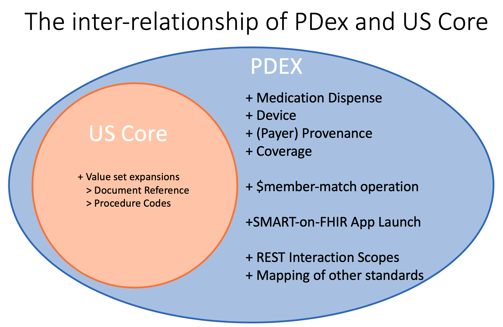
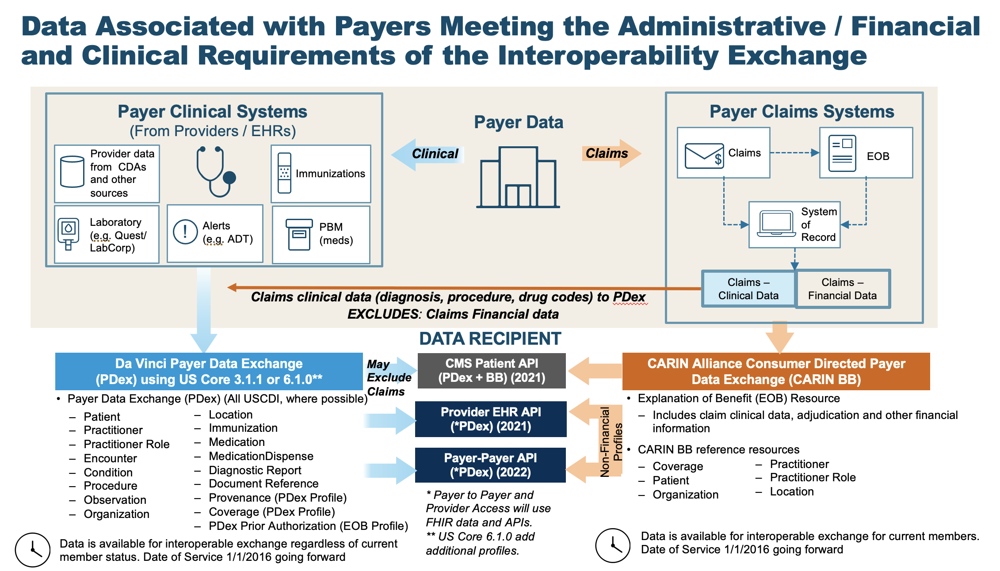
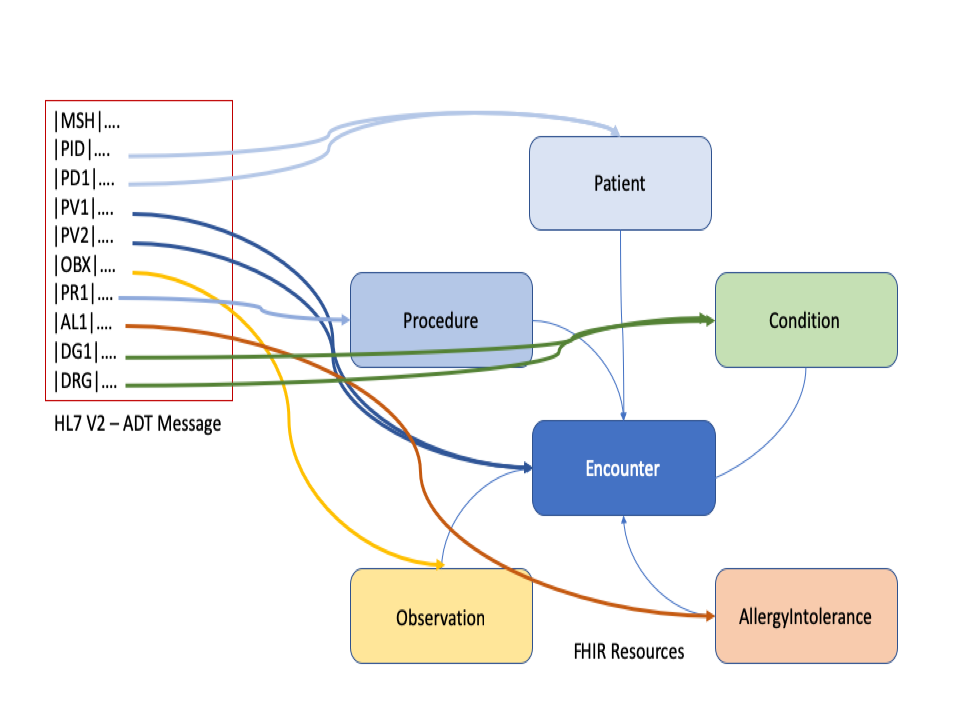

Da Vinci Payer Data exchange
0.1.12 - CI Build
Da Vinci Payer Data exchange
0.1.12 - CI Build
Da Vinci Payer Data exchange - Local Development build (v0.1.12). See the Directory of published versions
This guide is based on the HL7 FHIR ( http://build.fhir.org/index.html ) standard, as well as the CDS Hooks ( https://cds-hooks.org/ ) , SMART on FHIR ( http://docs.smarthealthit.org/ ) and OAuth2.0 ( https://oauth.net/2/ )standards, which build additional capabilities on top of FHIR. This architecture is intended to maximize the number of clinical systems that conform to this guide as well as to allow for easy growth and extensibility of system capabilities in the future.
This Implementation Guide (IG) also utilizes the profiles detailed in the HL7 FHIR� US Core Implementation Guide STU3 Release 3.1.0 ( https://www.hl7.org/fhir/us/core/ ) based on HL7 FHIR Release 4. This guide addresses use cases for payers to share clinical information with members, their authorized third-party applications, other payers or providers. In addition the guide adds profiles and operations that are either not available or are unsuited for use by the payer community. An example of this is the MedicationDispense that is used to record the prescription medications supplied by a pharmacy to a health plan member. The relationship between US Core and Payer Data Exchange can be expressed in a venn diagram as shown below.
|  |
Implementers of this specification therefore need to understand some basic information about these specifications, which act as building blocks for this Implementation Guide.
The purpose of this Implementation Guide is to enable data to be exchanged between Health Plans (Payers) and Practitioners (Providers) and via Member-authorized exchange between Health Plans and Third Party Applications, or with other health plans.
All data exchanged by Health Plans using the interactions covered in this IG SHALL be transformed to FHIR R4 resources. Health Plans MAY have both data from clinical and claims sources that they store in their Systems of Record. This IG does not require Health Plans to store this data in FHIR formats, only to be able to transform it to FHIR resources for the purposes of data exchange with Providers, other Health Plans and Third Party Applications for the interactions covered in this IG.
There are items in this guide that are subject to update. This includes:
At this point in time the mapping from X12 specifications to US Core Resources is not included as part of the IG. We have mapped the CARIN Alliance CPCDS as a generic representation of information held by Payers relevant to representation in US Core profiles.
We will provide an update to the CPCDS mapping to US Core Profiles now that the CARIN Consumer-Directed Exchange IG has been submitted to ballot. Should we identify gaps we will evaluate the options to address them.
The Vocabulary, Value Sets and codings used to express data in this IG are subject to review and will be reconciled with X12 ( http://www.x12.org ).
The schematic shown below provides an overview of this transformation.
|  |
Health Plans receive data from many other sources that contribute to a Member’s Health History. In addition to medical claims Health Plans may receive C-CDA documents or HL7 V2 messages, such as Admit, Discharge, Transfer (ADT) Messages. As an example the diagram below shows how an ADT Message can be transformed into HL7 FHIR Resources:
|  |
This IG covers three methods of information exchange:
An overview of the flow of the CDS-Hooks and SMART-on-FHIR exchange is shown below. This exchange flow is used for communication between Providers and Health Plans. The CDS-Hook will be used to perform a Patient/Member match and return a token that enables a SMART-on-FHIR App to access information via the Health Plan’s FHIR API for the matched member.
The sharing of data with a member-controlled Third Party App is accomplished through the Member’s HIPAA Right of Access. As such the member is able to use their data in any way they desire. Consequently the Third Party App may not be a HIPAA Covered Entity or Business Associate of a covered entity and may not be covered by HIPAA controls in the use of data, sensitive or otherwise. If it is an authorization to exchange data between two covered entities (e.g. Payer to Payer) the controls for protecting sensitive information flow with the data.
The well defined mechanism for enabling Member/Patient authorization to share information with a SMART-on-FHIR application framework process. The member SHALL authenticate using credentials that have been issued by, or are recognized and accepted by the Health Plan. These are typically the member’s customer portal credentials for accessing the health plan.
After authenticating the Member SHALL be presented with an Authorization screen that enables them to approve the sharing of information with the Third Party, or new Health Plan, Application that has client application credentials registered with the Health Plan.
The $patient-everything operation for an individual member enables the potential use of Bulk FHIR, using such formats as ND-Json. This IG does not define the alternate secure transport mechanisms that may be used for exchange between Health Plans. However, the IG does allow for the use of Bulk FHIR formats to exchange data for an individual member where the member has authorized that exchange or Federal, state or local regulations authorize the sharing of information between parties.
The use of the Bulk FHIR specification for transmission of member data SHALL honor jurisdictional and personal privacy restrictions that are relevant to a member’s health record.
Data Segmentation capabilities for Bulk Data Transfer are currently being developed by FHIR community members that may have an impact on future revisions of the IG.
Since Health Plans compile information from many sources to create a Member’s Health History it is important that data traceability is maintained. This guide defines a Provenance resource that is used for this purpose. This resource supplements US Core Provenance profile which is typically not suited to payer’s common use cases. The PDex Provenance profile is used to identify the source of information, the agents the data passed through and the actions they performed on the data.
Health Plans SHALL incorporate provenance records that they receive as part of any exchange of FHIR data. Where a FHIR Provenance resource is not provided, such as when data is received from other non-FHIR sources, the Health Plan SHALL create FHIR Provenance record(s) to identify the source of the information being received and the actions applied to the data, such as converting from one format to another. Health Plans SHALL provide Provenance records in any PDex information exchange.
In the case of historical data the Health Plan SHOULD identify the author, source and format of the data .
Provenance is covered in more detail in Handling Data Provenance.
IG © 2020+ . Package hl7.fhir.us.davinci-pdex#0.1.12 based on FHIR 4.0.1. Generated 2020-08-18
Links: Table of Contents |
QA Report
| Version History |
 |
Propose a change
|
Propose a change